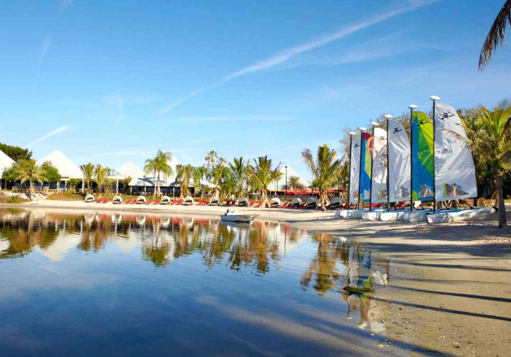

Club Med Sandpiper Bay (Florida)
Club Med Sandpiper Bay, located in Port St. Lucie, Florida, is an all-inclusive resort known for its excellent family-friendly amenities, including a kids' club, sports academies, and various dining options. It offers activities like golf, tennis, and watersports, making it a perfect destination for active families.